Python is a great tool for writing short yet power scripts in order to perform complex tasks like image processing and NLP. But you can further enhance your code and reduce some lines of script by incorporating the following features that Python 3.8 offers.
WALRUS OPERATOR
Assignment expressions can be used intelligently to avoid extra lines of code. Syntax that enables developer to combine assignment expression within a looping condition were much awaited. Python 3.8 fortunately came up with such kind of assignment operator named as Walrus operator ( := ).
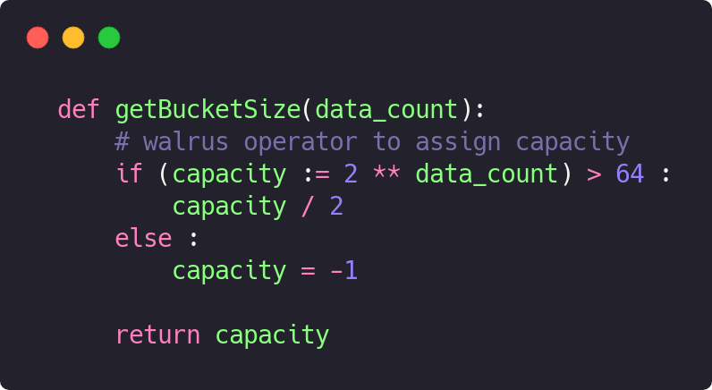
DICTIONARY UNION
Combining two collections is a commonly used operation. Out of all, merging two dictionaries / map using a simple operator can be very handy. With Python 3.9, you can do that with merge operator symbolised as ‘| ’
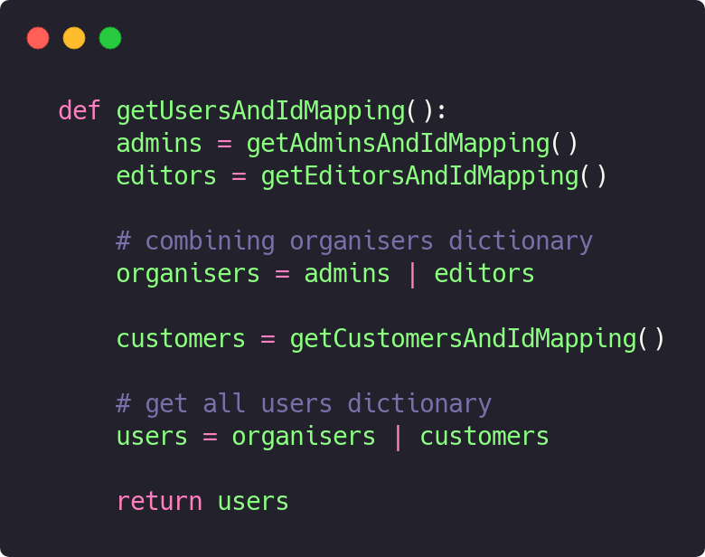
Further you can enhance the merge operator by using it with assignment symbolised as ‘ |= ‘
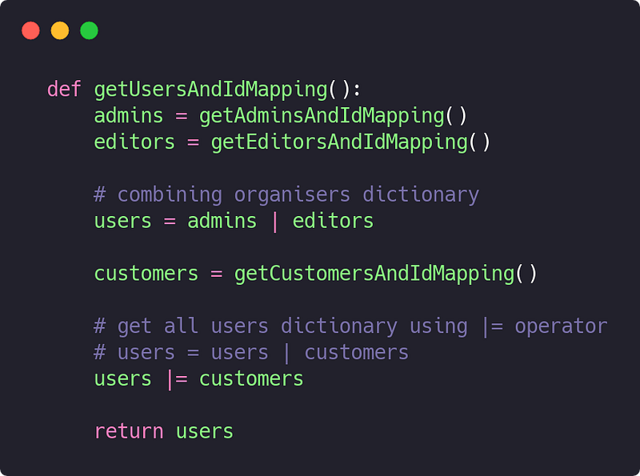
REVERSING DICTIONARY
From Python 3.8 onwards, developers can use reversed() function with dictionary now. This can be useful while ordering large dataset without any need of looping through the complete collection.
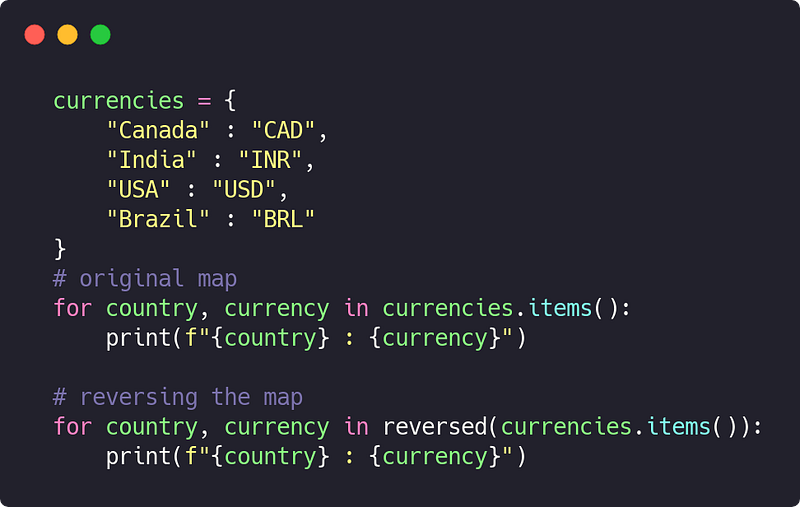
COLLECTION COMPREHENSION
Generally, construction of data structures like list, dictionary or tuples with a regular pattern demands few lines of code consisting of the loop structure and its body statements.
As Python is known for its powerful and compact syntax, version 3.8 came up with a concept of comprehensions for collections which allows the programmers to generate collections in one line just like a PRO!
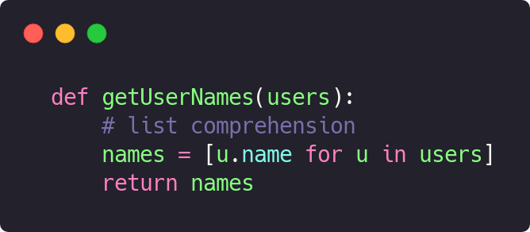
Comprehensions can have conditional statements in order to provide more control on generating collections.
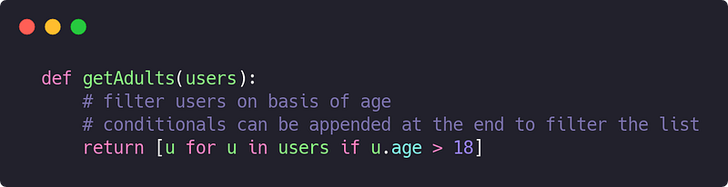
Unlike list and dictionary comprehensions, tuple comprehensions return generator which needs to be iterated further for consumption
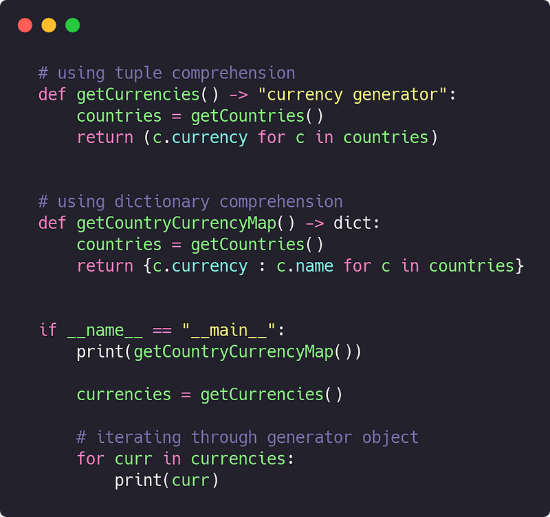
TYPE HINTING
Type annotations are very common in various languages which aims to provide more meaning to the code. It can be classified as
Active Type Annotations
Such annotations decorate the code and also perform some actions (such as validations) which affects the flow of control by validating data types
Passive Type Annotations
Such annotations decorate the code to enhance readability and descriptiveness but does not affect the flow of control in any sense
Python’s type hinting / annotations are passive in nature. The type annotations can provide information regarding datatypes of argument and return type of function as shown
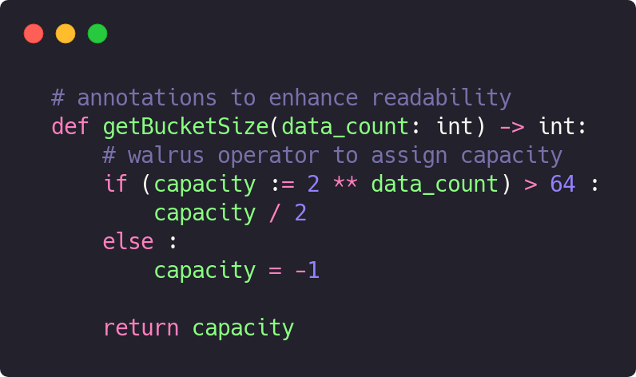
Being a dynamically typed language, it is often hard for a developer to read large code snippets and identify the data type and structure of expected values. Adding type hints to your code can reduce this issue and greatly enhance readability while backtracking code snippets
MISCELLANEOUS FUNCTIONS
Developers spend most of their time in processing the data structures. Modern day languages like Kotlin, Swift offers loads of features to process the data structures in a concise manner without compromising efficiency.
Following are some of the most used processing operations :
Sorting
Arranging the collection in a specific order depending on a comparator
Filtering
Filtering the actual collection in order to provide new collection of items which satisfy certain conditions
Mapping
Converting existing collection into new collection with different nature of items
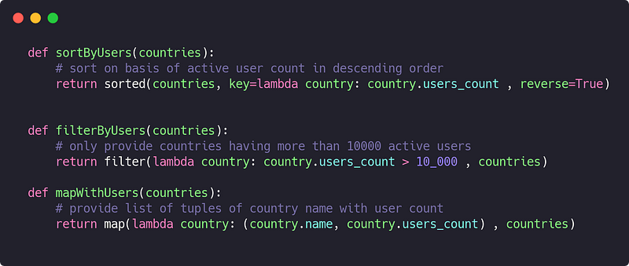
All of the mentioned operations use lambda syntax which allows the develop to write functions in a compressed syntax
f-STRING FORMATTING
String formatting and interpolation are handy features when a software demands high amount of formatted data to be pulled from or pushed to the user. Python offers f-strings in order to fulfil such requirements.
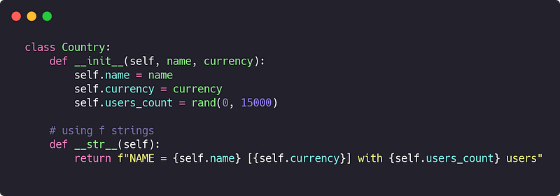
Developers can use = in order to evaluate and print the self descriptive strings. You can follow the code snippet given below in order to clarify this description
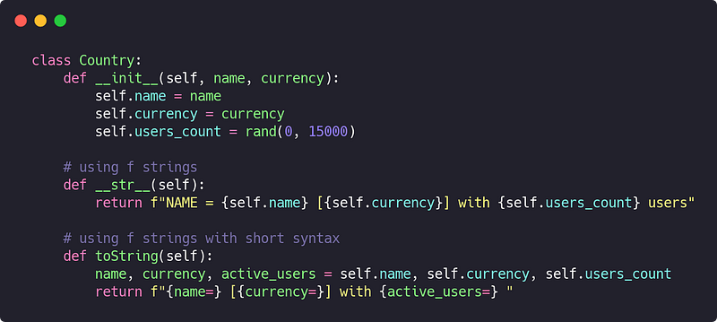
VIRTUAL ENVIRONMENT
PIP works like a charm in adding dependencies to the projects. But straight away installing project dependencies globally offers few disadvantages on system level such as unnecessary memory consumption.
To resolve this issue, python offers virtual environment which offers a separate space for a project to all of its dependencies and also keeps those dependencies private to the project.
Installing virtualenv
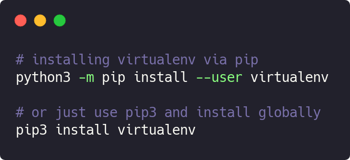
Creating virtual environment
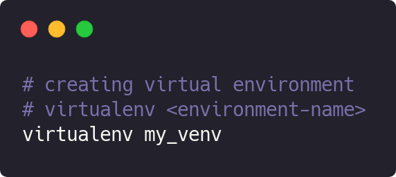
Activating / Deactivating virtual environment
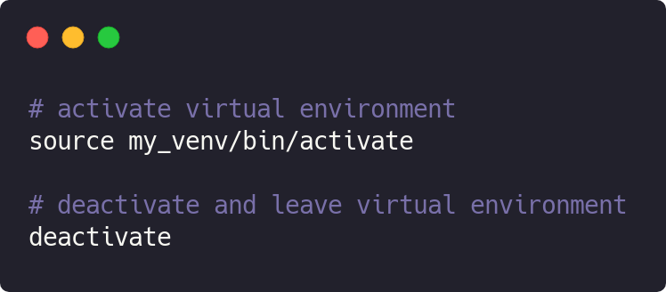
CONCLUSION
Latest updates in Python 3.8 has enhanced the syntax of the language and has offered more powerful features to the developers. Python has maintained its USP of offering maximum functionality in minimal code.
“ Whenever the language developers increase the compactness of language beyond a threshold, it in turns increase the complexity of the code. Although the nature of releases this language is providing is familiar to the world of software developers and also resembles modern languages like Swift. “